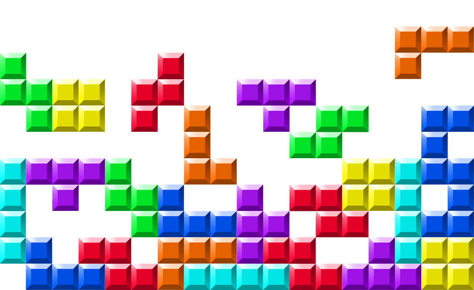

Tetris puzzel
Wie is de dader?

Om te achterhalen wie de dader is, is het de bedoeling dat men het TETRIS-spel speelt tot alle letters van de dader te zien zijn. De letters zitten verstopt over het volledige LED-paneel waarop het spel gespeeld wordt. Het idee is geïnspireerd op het programma Blokken van VRT waarbij telkens een letter vrijkomt als een blok op de juiste plaats terecht komt.
Benodigdheden
- ESP32
- 5V-voeding
- 1 tot 3 (64*32) led panelen
- 4 knoppen